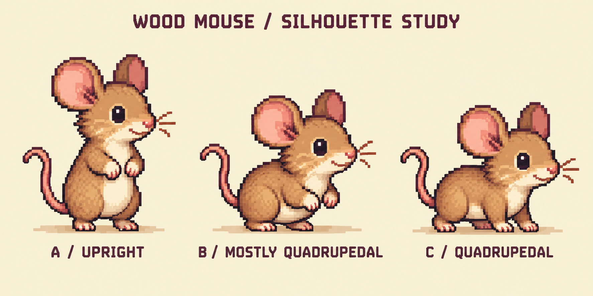
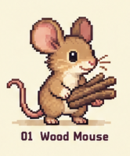

One mouse. Two ways to move.
A for work. C for travel. The mouse rears up to Mine and Use, then returns to four paws to Walk and Sprint. B bridges the two.

Concept direction above. The native stills below are separately drawn pixels—not reduced copies of the concept. These need their own visual review.
Current budget · 40 × 32
One source pixel per world unit. The grid is one 32 × 32 terrain block.
Larger study · 64 × 64
Additional room for ear interiors, cheeks, eyes, belly, and natural haunches. The art pixels stay the same size, so the mouse is physically larger in the world. This is a proposal—not a game-scale change.
Identity anchor

Keep the round ears, large dark eye, warm cheek, cream muzzle and belly, pink paws, thin tail, and short natural limbs. No clothes, no generic humanoid body.